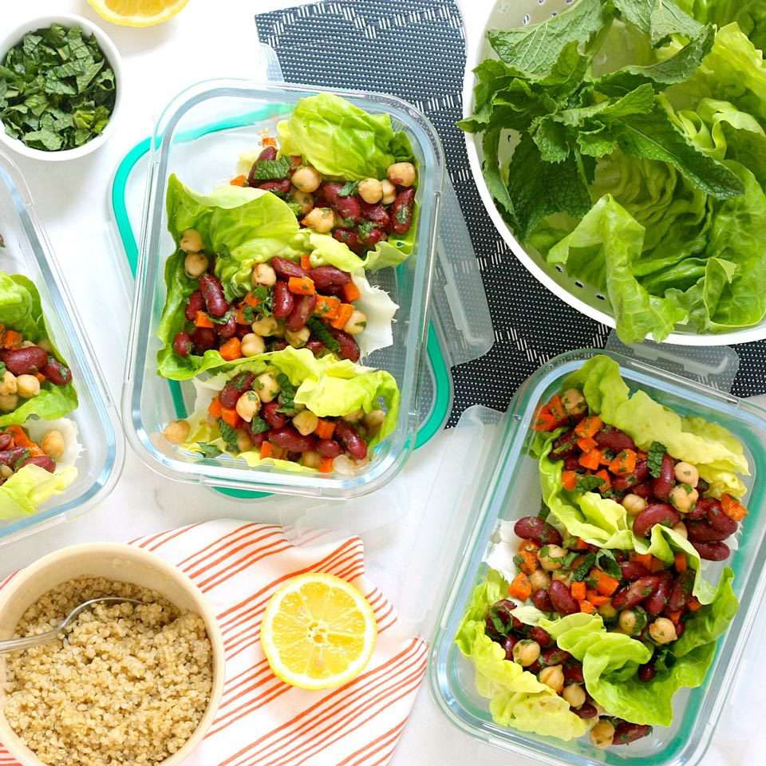

Start here: simple rules
- Choose one challenge. Keep it under 15 minutes a day.
- Track with your phone or a quick note. Missed a day? Reset tomorrow.
- Share a check-in on Student Fitness Stories or with a friend.
Social Steps Challenge (7 days)
- Goal: 6,000 steps/day (stretch goal 8,000). Walks between classes count.
- Track in Apple Health/Google Fit/Fitbit and take a weekly screenshot.
- Share progress in your class group chat or on the stories page for accountability.
- Bonus: bring a bottle—sip 4–6 cups water/day.
Budget Lunch Prep (5 lunches in 7 days)

- Sunday: cook chickpea curry + rice and pack 3 containers.
- Weekdays: rotate chicken noodle soup / omelette / tuna-pasta for fast dinners.
- Carry one reusable container + fork; reheat at library/student-centre microwaves.
- Track “takeout skipped” and money saved. Share one photo of your best lunch.
Desk-Stretch Bingo (finish 5 boxes this week)
- Cat–cow ×6, neck rolls 30s, doorway pec stretch 30s/side.
- Pick any 5 days during study week—set a 3-minute timer and move slowly.
- Great before exams: shoulders relax, focus comes back.
- Check off boxes in your notes app; post one check-in to keep the streak alive.